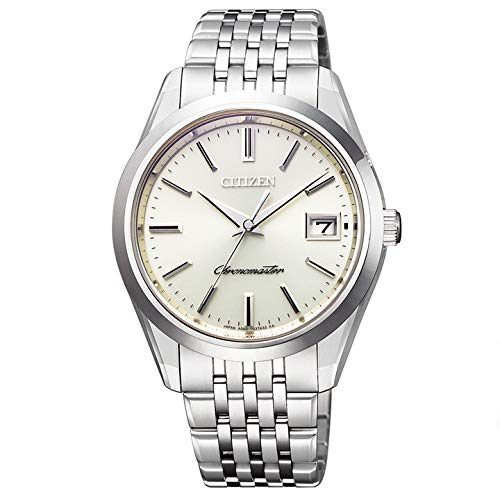

Q1.時計は時間を知る物ためだけの物である
Q2.誕生日は祝われるより祝う方が好き
Q3.自分はインドア派よりアウトドア派
Q4.朝食は毎日ちゃんと食べるほうである
Q5.時計をつけるなら重たい物より軽い物の方がいい

年差が5秒しか生じない、世界最高レベルの高精度ムーブメントを搭載したビジネス用腕時計。2100年2月28日まで月末時の修正が一切必要ない「パーペチュアルカレンダー」も搭載している高機能なモデルと言われています。バンドには、「スーパーチタニウム」を採用。ステンレスの約5倍の硬度があり、錆びにくく肌に優しいことが特徴です。

ビジネスの場では常に誠実さと、落ち着いた物腰が好まれます。この時計はブラックの革ベルトを採用しており、スーツにしっかりと馴染む腕時計となっています。クオーツ式の日本製ムーブメントを搭載しており、デザインだけでなく品質も優れているのが魅力。ちょっとした水滴に耐えられる3気圧防水性能を備えているのもポイントです。正直デザインがシンプルなため、男性用女性用と使える所が魅力的です。
この時計のモデルは1940年代にアメリカでベストセラーとなったシリーズで、こちらは2014年に復刻した商品です。優美な曲線と立体的なベルトのデザインが、女性らしさを演出します。光沢のあるシルバーのベルトは、洗練された印象を与えるので、大人の女性のビジネスシーンに最適です。これを着ければあなたも知的美人の仲間入りをすることでしょう。
アメリカ発祥のマークジェイコブスは、ウェアからフレグランスに至るまで、幅広いアイテムを展開しています。そのなかでも、他にはない斬新なデザインで話題を集めているのがレディース腕時計です。 ブランドロゴをあしらった文字盤は、ファッションのアクセントとしても活躍し女性陣に露骨に着飾った感じがなく、ビジネスシーンに使える上品さもあるので、オンオフ共に使える腕時計を探している女性にもおすすめします。